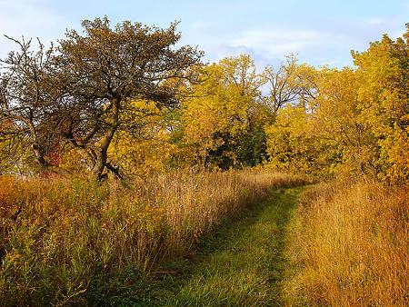

167-20
Most pictures on this site may be purchased as signed prints. For further information, contact me via e-mail.
Angela Weil: portfolios
Bob Munro: portfolios
Dale Cotton: portfolios
Dennis & Carol Bartlett: portfolios
Ellen Cotton: portfolios
Linda Shedlock: portfolios
Note: Portfolios automatically size each image to 80% of your screen width up to a maximum of the original size of the image which is roughly 1000 pixels on the longest side. If you use a 1024x768 or smaller screen, remember you can press F11 in most browsers to maximize your display area for viewing images. You can also press Ctrl+, Ctrl-, and Ctrl+0 to modify the presentation size.